LOG — GANSBAAI
Dropped into the cage off Gansbaai at first light. Counted the nicks on a great white's dorsal fin as it slid past the bars.
I'm a
I'm a sophomore at UW–Madison studying Computer Science and Economics. I enjoy building web apps and AI tools, and I care a lot about making what I build actually useful.
Currently, I work as a research assistant at the Pain Context Innovation Lab, where I build and maintain the patient-facing platform. I also tutor CS students through the Undergraduate Learning Center and stay involved on campus through WIBT, WACM, and the Product Management Club.
I'm actively looking for internship opportunities for Summer 2027. Feel free to reach out!

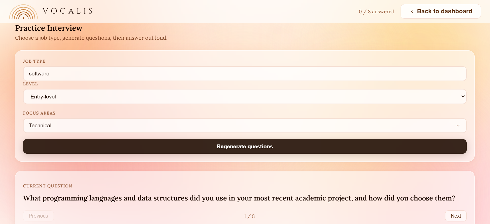
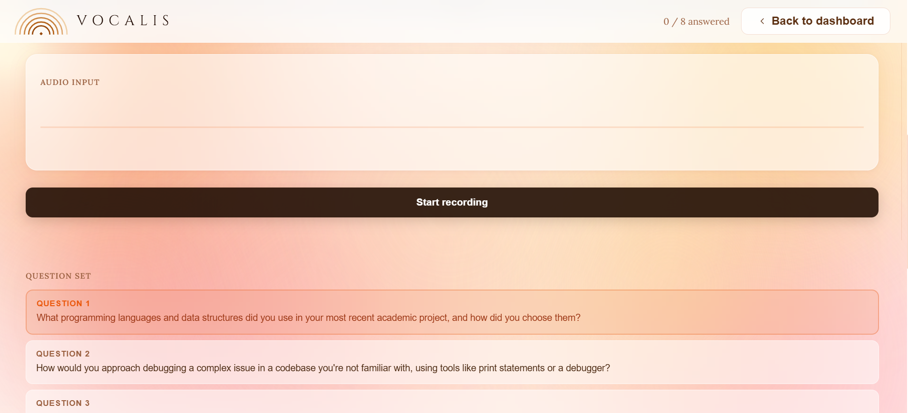
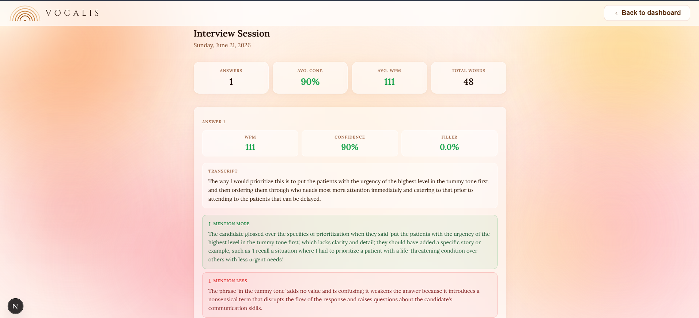
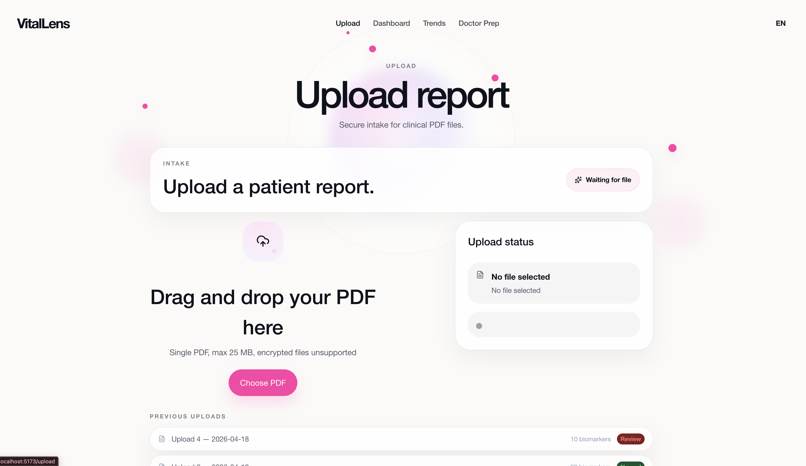
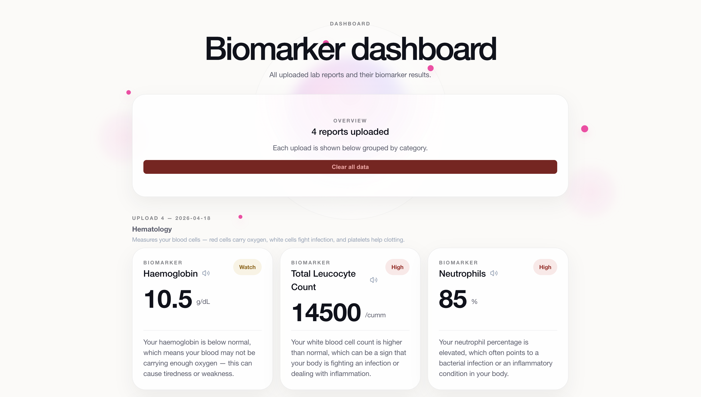
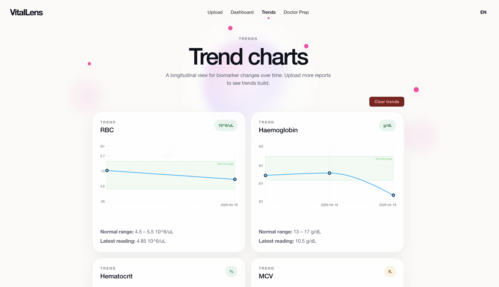
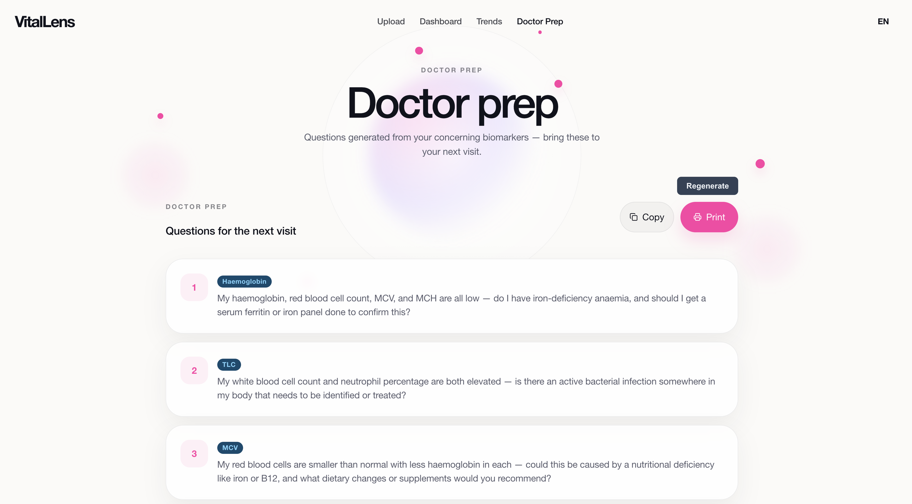
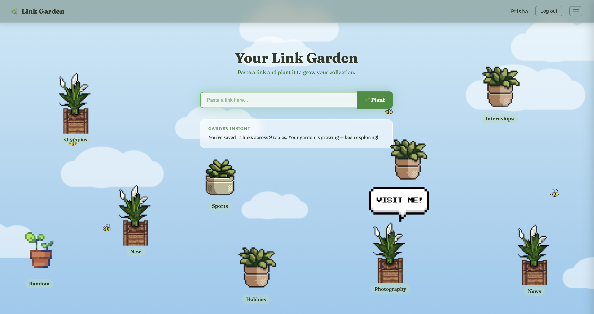
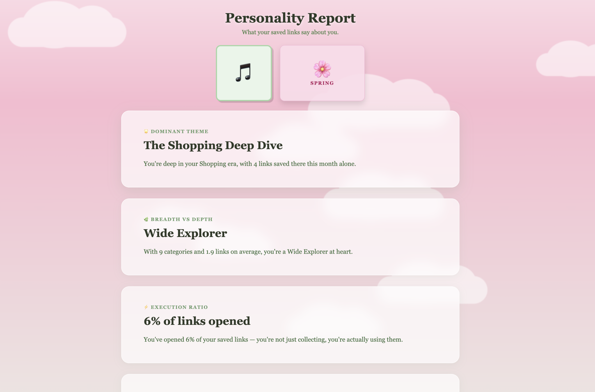
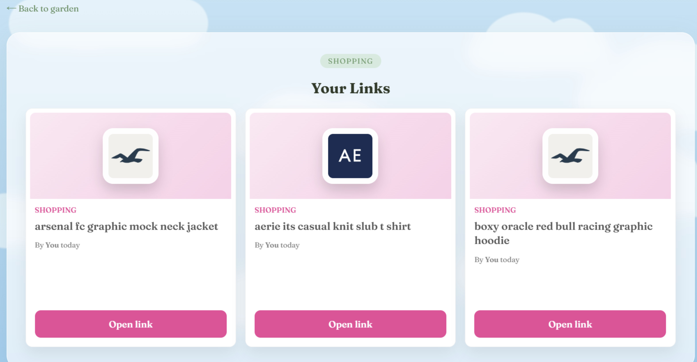
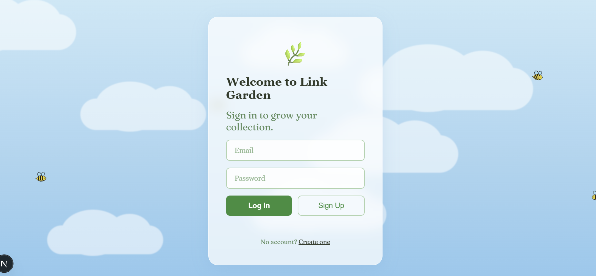
Dropped into the cage off Gansbaai at first light. Counted the nicks on a great white's dorsal fin as it slid past the bars.
Building a face-detection tool that blurs, pixelates, or blacks out bystanders in footage — tracking stays locked across frames with ByteTrack, and nothing is recognized or stored. GitHub ↗
Drove the highest paved road in North America — 14,130 ft on Mount Evans. Thin air, no guardrails, marmots entirely unbothered.
A meal planner that treats a week of eating as a constraint problem: an OR-Tools solver picks recipes that hit macros, stay under budget, and reuse ingredients. GitHub ↗
A dusky pod ran the bow wake off Kaikoura for twenty minutes, taking turns leaping across the front of the boat.
Side experiment in NLP — pulling structured fields out of dense legal text so a contract is easier to skim and query. GitHub ↗
An hour drifting over the reef shelf on the Great Barrier Reef, trailing a green turtle that made a point of ignoring me.
Out along an exposed granite ridge in Yosemite. Turned back when the clouds rolled in faster than the forecast promised.